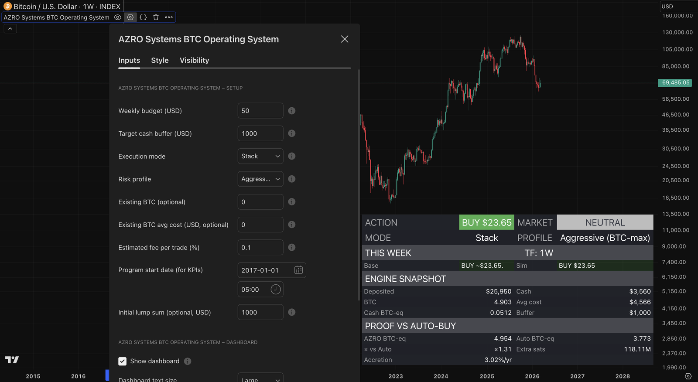
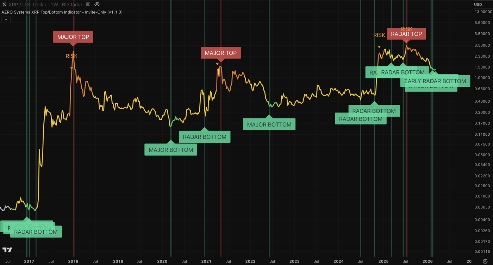

See how each AZRO system actually works.
Open BTC to see how the model helps you stack more sats with less cash. Open XRP to see how the disciplined weekly system combines major confirmations, top-side defense, a dynamic Weekly Plan, and on-chart proof tracking across the full cycle.
What you see on the chart is only the surface. The maintained system behind it is the real value: native alerts, suggested sizing, proof on chart, handbooks, quick-start guides, playbooks, and documented updates that keep the workflow dependable. Frozen scripts and AI prompts do not give you that. You are buying a maintained model, clear documentation, and a head start measured in cycles.
BTC system features.
Guidance, sizing, modes, proof, alerts, and safeguards behind the BTC Operating System.
BTC system features.
Guidance, sizing, modes, proof, alerts, and safeguards behind the BTC Operating System.
Why this beats blind buying, overtrading, and frozen rules.
The edge is not one BUY, HOLD, or TRIM output. It is the full system behind it: clear guidance, suggested sizing, multiple modes, proof on chart, native alerts, handbooks, and a written workflow designed to help you stack more sats with less cash.
- BUY / TRIM / HOLD output plus a suggested amount
- Modes, risk profiles, and alerts for different operating styles
- Proof on chart versus a matched auto-buy baseline

One weekly operating surface
ACTION, MARKET, amount, and status stay readable in one dashboard.
Modes built for different styles
Stack, Adaptive, Event, and Performance let the same system fit different operators.
Proof that keeps score
BTC-eq, extra sats, and baseline comparison make the workflow auditable on chart.
What the BTC dashboard is telling you.
What each part means, and how it fits into a repeatable weekly Bitcoin process.
Action + suggested amount
One clear BTC action plus a matching amount turns the week into a process instead of a guess-and-stress loop.
Market cycle + alerts
The dashboard keeps the bigger cycle clear and pairs it with high-attention alerts so the plan stays intact when the market gets loud.
Modes + risk profiles
Use the same maintained model with different operating styles, response speeds, and Trim behavior.
Proof vs auto-buy
The proof layer lets you audit whether the process is actually adding BTC-equivalent versus a simple baseline — without leaving the chart.
XRP system features.
Walkthroughs, confirmations, risk layers, Weekly Plan guidance, proof tracking, and the alert structure behind the XRP cycle workflow.
XRP system features.
Walkthroughs, confirmations, risk layers, Weekly Plan guidance, proof tracking, and the alert structure behind the XRP cycle workflow.
Why this is the XRP cycle system worth owning.
This is not one alert pretending to be a system. It is a maintained, fault-tolerant weekly XRP workflow: layered confirmations, top-side defense, a dynamic Weekly Plan, transparent on-chart proof tracking, native alerts, handbooks, and documented updates built to stay useful across changing market conditions.
- MAJOR / RADAR / LIGHT / EARLY labels plus top-side risk workflow
- Dynamic Weekly Plan dashboard with on-chart proof tracking
- Built around confirmed weekly structure, not constant intraday watching

Major turns made easier to read
The workflow combines confirmation layers and risk context so major decisions are not riding on one fragile condition or one influencer call.
A dynamic weekly budget path
The dashboard keeps weekly action, budget state, and on-chart proof tracking visible so the workflow stays structured.
Built to stay useful as conditions change
Documented updates, stable defaults, and layered structure help the workflow stay dependable across changing market conditions.
What the XRP workflow is telling you.
Each surface supports a written plan around the bigger cycle.
MAJOR TOP / MAJOR BOTTOM
Treat these as workflow anchors rather than predictions. Use them to follow your written exposure and exit rules.
RADAR TOP / RADAR BOTTOM
RADAR adds structure without demanding more chart time. Use it to support your plan, not to create more noise.
Weekly Plan dashboard + action
The Weekly Plan turns the cycle engine into a calmer weekly operating process: weekly action, budget state, and proof versus weekly auto-buy stay inside the same dashboard, while one-time exceptions stay in the tracker instead of on chart.
Dashboard views
The XRP cycle system now supports a full dashboard view and a simpler dashboard view, so you can keep the weekly action, budget path, and proof surface readable in the layout that fits your chart best.
LIGHT TOP / LIGHT BOTTOM
LIGHT labels help frame timing between major turns. Leave them on for awareness, or turn them off for a cleaner confirmation-only chart.
EARLY TOP / EARLY BOTTOM
Helpful during the week, but only confirmations persist at the weekly close.
Risk triangles + context overlays
Use the risk layers to tighten rules, reduce exposure, and stop emotion from breaking the plan near major tops.
Risk-colored XRP price line
An optional XRP-only price-line overlay that adds continuous regime context between labels. Visual only — no labels, no alerts, and no signal changes.
Alert setup (one-time)
Choose the confirmations and weekly-plan alert path your playbook uses, set them once, and let the workflow stay on watch for the cycle turns that matter instead of living on the chart all day or waiting for someone else to call the next move.